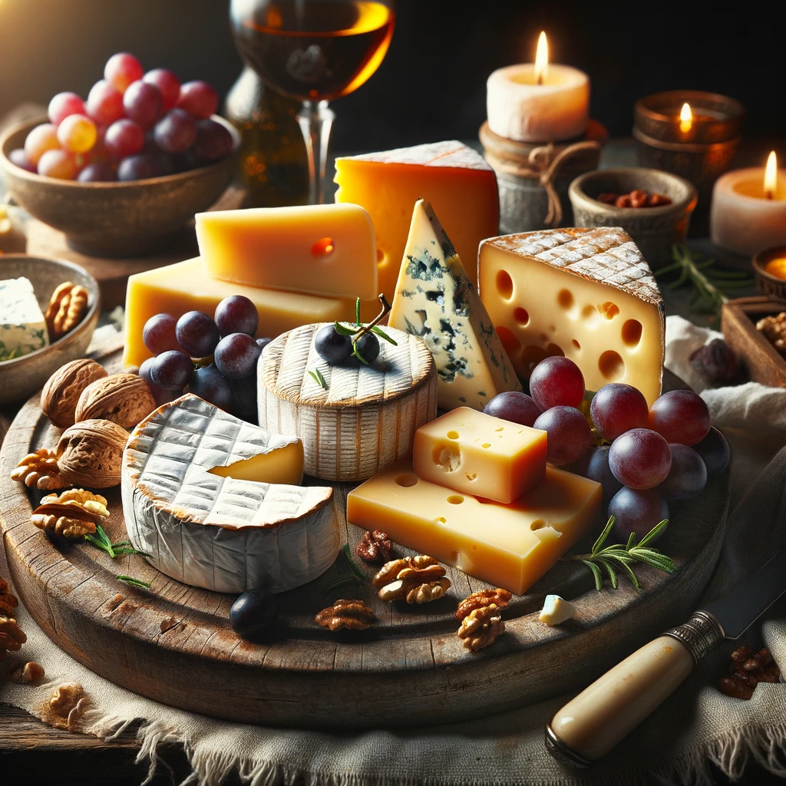

Comfortable Beds
We've invested in custom-designed bedding that provides each cow her own clean, dry space to rest and ruminate. Our cows enjoy up to 12 hours of rest daily, crucial for their well-being and milk yield.

Stress Free
YoCows do not like change and are very aware of their environment. We do our best to provide a comfortable place for them to rest, eat and drink at all times. Calm cows are healthier and produce more milk.

Open Spaces
Our barns are designed to promote free movement throughout the space. At any time, our cows can find a place to lay down, to eat, or a spot to drink water without competing with another animal.